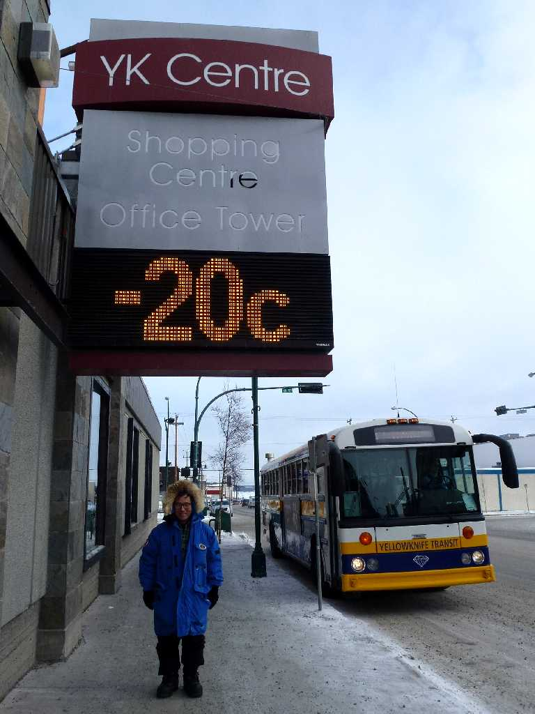
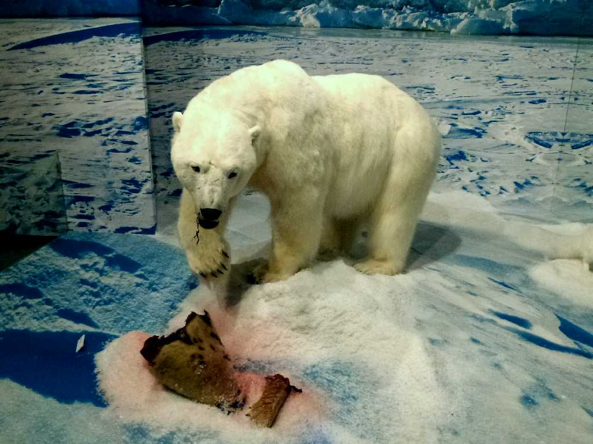
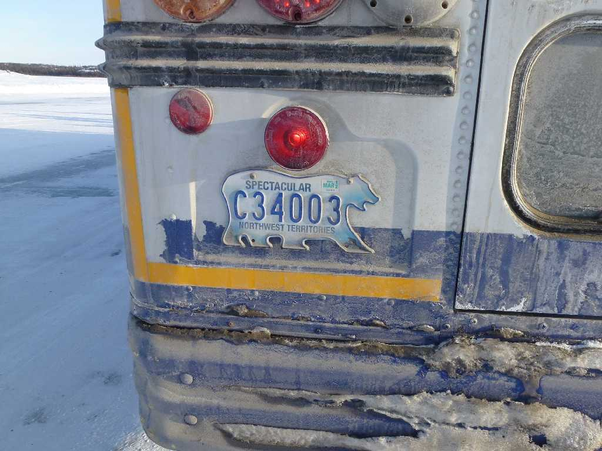
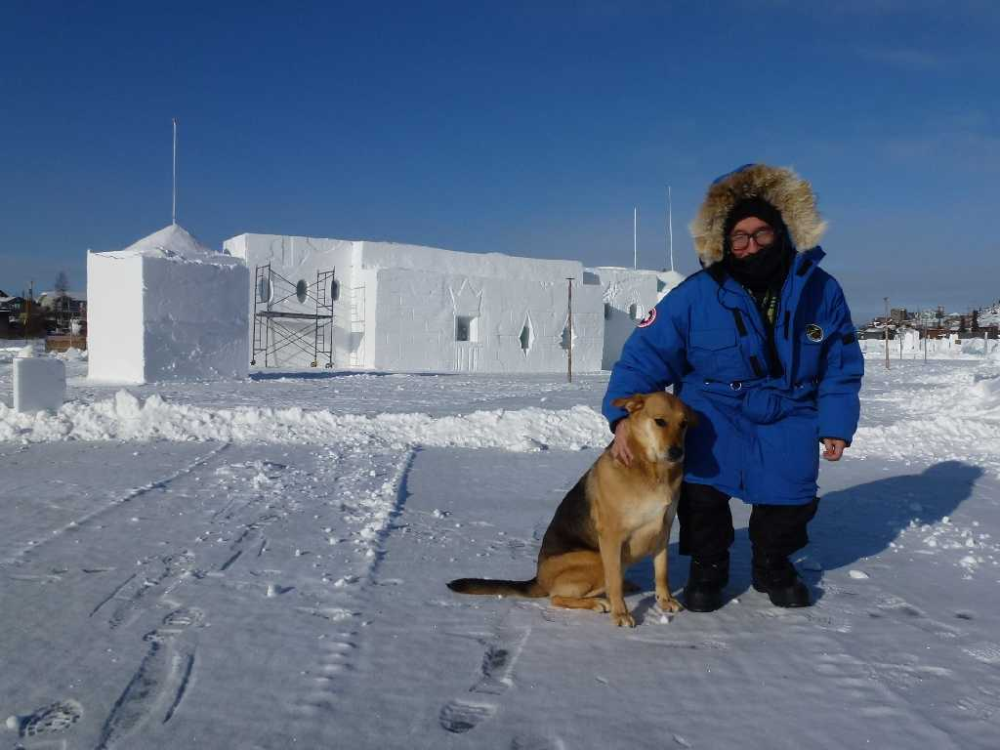
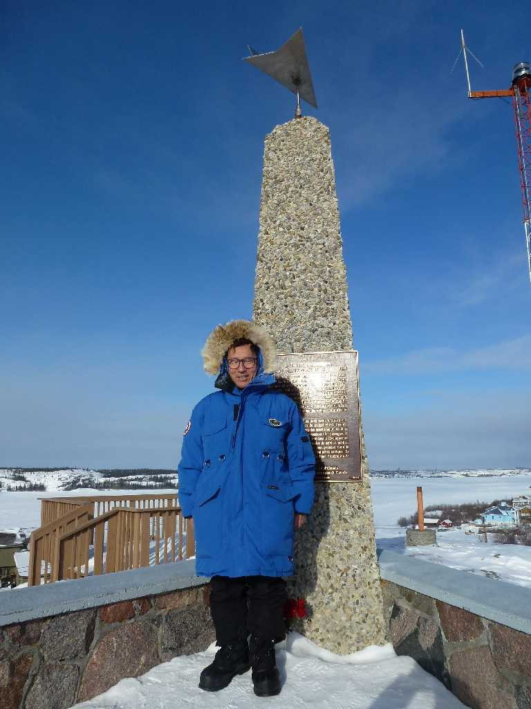

February 24 2012 Central City Yellowknife
オーロラを夜中に観て朝食に出た午前１１時半の気温は－２０℃でこの低温は初体験
 
February 22 2012 White Bear Yellowknife
博物館にあるアザラシを食べる白熊の剥製と白熊を模ったノーザンテレトリーのナンバープレート
February 22 2012 Ice Road on Great Slave Lake Yellowknife
グレートスレイブ湖が凍結し氷厚が１ｍ以上になると湖の上にアイスロードが整備され氷厚によって何トンの車が通れるか表示される

February 24 2012 Ice Castle on Great Slave Lake Yellowknife

February 24 2012 The Bush of Pilot's Monument Yellowknife
旧市街と新市街の間にあるグレートスレイブ湖に突き出したイエローナイフ半島の岩山の頂上 プロペラ飛行機のパイロット達がイエローナイフを探す目標とした ブッシュパイロットは水上氷上離着陸の名士だった